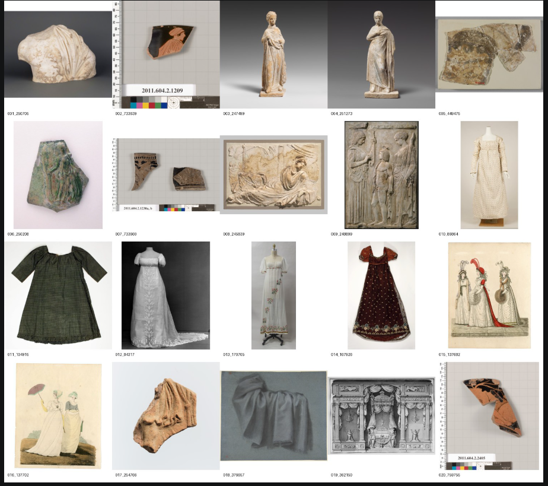

Use this route only when the prerequisites are met. Otherwise,
agree an alternative with the academic.
Cloud environment — optional practical
Additional GPU capacity, with an optional guided introduction to
remote computing.
Proposed allocation: $5 per student; $30 for six. Confirm GPU,
storage and transfer charges.
Foundation: a pre-tested Docker image with ComfyUI and the
required dependencies.
1. Launch a GPU instance and monitor costs.
2. Use the remote terminal to download, inspect and run a
prepared Python script from a verified repository.
3. Save and download outputs, then remove unused resources.
Teach these steps when remote computing supports the learning
objective. Otherwise, provide the environment ready to use.
Offline fallback — no GPU, no internet
→ Pre-rendered outputs showing each pipeline stage
→ Workflow exercises without running inference
→ Annotated screenshots of the interface
Three levels deep. The students still learn.
Learning continues
Students understand the workflow, node structure, and
decision-making — even without live generation. Point them
to cloud GPU options for practice after the session.
Document everything → build a library of tested workflows.
Hover or tap each node for practical actions
From provenance to practice: curating a dataset

Curatorial judgement becomes training data
A deliberately heterogeneous corpus of 20 public-domain works
from The Metropolitan Museum of Art Open Access collection.
Sculpture, garments and images of fabric bring different
materials and historical contexts into the experiment.
Selected around drapery, folds and movement
Catalogue metadata retained
Rights status recorded for each work
Source: The Metropolitan Museum of Art Open Access.
Revolutionary Drapery: a LoRA experiment
Adapting an existing model
SDXL adapted using Hugging Face PEFT (LoRA), trained on 20
public-domain images using an NVIDIA RTX 3090 rented through
Vast.ai.
Small adapters are trained while the base model’s weights remain
frozen.
Resolution: 1024 × 1024
LoRA rank: 8 · training steps: 500
Batch size: 1 · gradient accumulation: 4
FP16 · gradient checkpointing enabled
Columns: base → 100 → 300 → 500 steps. Rows: body, cloth and space.
Each row uses the same prompt and seed across checkpoints.